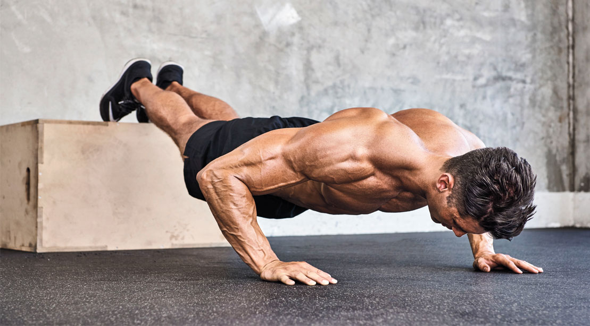

Basic Excercises To Stay Fit At Home

{kind=link}
What is Excercise?
Excercise is any bodily activity that enhances or maintains physical fitness and overall health and wellness
It is performed for various reasons, to aid growth and improve strength, develop muscles and the cardiovascular system, hone athletic skills, weight loss or maintenance, improve health, or simply for enjoyment.
Many individuals choose to exercise outdoors where they can congregate in groups, socialize, and improve well-being as well as mental health.
In terms of health benefits, the amount of recommended exercise depends upon the goal, the type of exercise, and the age of the person. Even doing a small amount of exercise is healthier than doing none.
Gym Vs Home Workout
Going to the Gym is not the only way to do an great workout.Working out at home also can be effective if we done it in an effective manner
While a gym provides a dedicated space,home workouts offer more flexibility and can be more effficient.It all depends on how you use your time and equipment to maximize your effort
Its your own choice to choose gym or home workout so that can suit your fitness and life goals.Lets see the pros and cons of working out at home :
Pros
- It’s convenient. You can skip traffic, and you don’t have to leave your house or work out during specific times.
- There’s a variety of workout options to choose from. You can use an app, watch a video or livestream classes
- It’s cost-effective. You don’t have to pay gym membership fees, and there’s no need for fancy or expensive equipment to get a great workout.
Cons
- It's easy to make excuses at home. If you aren’t self-motivated, you may be tempted to skip your workouts or get distracted and cut them short.
- Space might be an issue. You might not have any open areas, such as a den or backyard.
- You may not know the correct form for various exercises. There aren’t trainers at home like there may be at the gym. This means you could injure yourself, so it’s best to stick to exercises you are already comfortable with.
Basic Upper Body

Sit-Ups .Basic,but effective.Aim for 20 to start, and work your way up to 50 once you're a pro. Do not tuck your feet under a chair or table for assistance, to get the maximum effect.

Crunches. These bite-sized versions of the whole enchilada isolate smaller, deeper abdominal muscles in their motion. Shoot for three sets of 20.

Planks. Hands down the best overall bodyweight toning move you can do. Rest on your elbows and toes, keeping your back and legs straight. Hold for one minute.

Bicycles. Lie on your back feet in the air, knees bent. Place your hands behind your head. Begin pumping your legs in the classic bicycle motion, vigorously, for one minute.
Basic Lower Body

Squats. Back straight, feet slightly turned out. Drop your seat to knee height. Do two sets of 10. Advanced/Dad version: do these with your kid on your back.

Lunges. This is the best quad toner in town. Start standing with your feet parallel. Take a big step forward with your right leg, landing with your knee bent and over your toes. Allow your back knee to drop down toward the floor while swinging your left arm forward for balance. Push off your right front foot to return to standing. Do two sets of 10 on each side.

Squat Jumps. Bend your knees as if you are going into the squat position, tucking your arms like a downhill skier. Spring off the floor and straighten your legs in the air, before landing in a squat once again. Advanced version: When you push off the floor into a jump, add a half-twist so you land facing the opposite direction. Do two sets of 10.

High Knees. Jog in place for one minute, lifting each knee as high as you can.

Calf Raises. Face a wall and place your palms against it for balance and support. Rise up onto your toes and back down. Repeat 20 times. Advanced version: Let your kid ride piggyback for extra resistance.
Advanced upper body workouts

Push-Ups. Drop and give us 20. Let your child sit on your butt for extra weight resistance.

Dips. Sit in a sturdy chair, hands holding the front edge of the seat. Push your butt forward until it is it suspended in front of the seat and your weight is being supported by your arms. Bend elbows and drop your hips toward the floor. Straighten. Do two sets of 10 dips.

Dead Lifts. A modified version of the gym classic, you’ll need a heavy, low-to-the-ground object for this, such as two gallon-size jugs of water, dumbbells, or a duffel bag filled with shoes. Start standing, feet shoulder-width apart, back straight, knees slightly bent. Keeping your back straight, reach down and grab hold of the weighted object on the floor in front of you. Return to a vertical position. Lower down; raise back up. Do 20 times.
Cardio Boosting Excercises

Jumping Jacks. Time to get your heart rate up. Making sure to raise your hands over your head each time, and keep the cardio going for at least one minute.

Burpees. Get from a perfect plank to a jump with the hands in the air and back again as fast as possible. Start with 10 and work up from there.